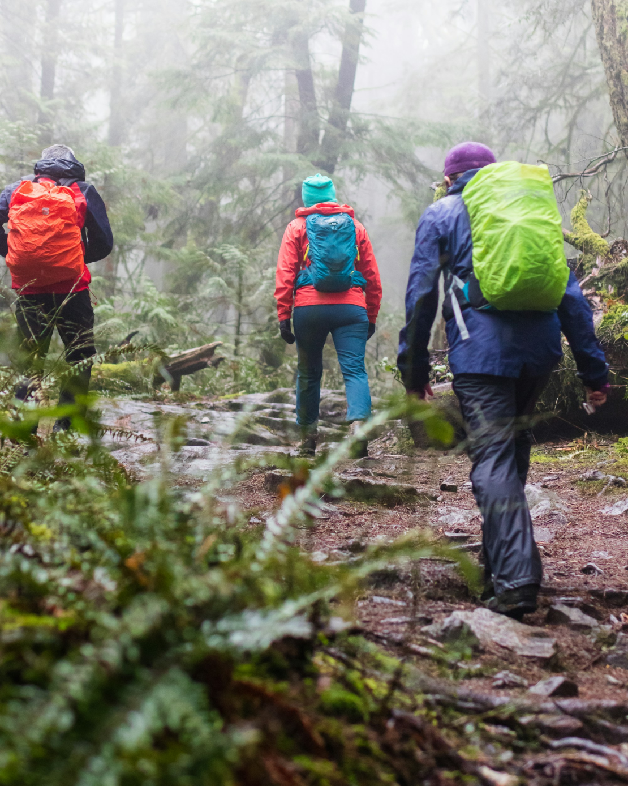

About us
At Rainydays, we specialize in crafting high-performance rain jackets designed to keep you dry, comfortable, and stylish—no matter the forecast. Our jackets are made from premium, eco-friendly materials that are as durable as they are breathable, ensuring you stay protected from rain without feeling weighed down. With innovative waterproof technology and designs that prioritize comfort and flexibility, our rain jackets are perfect for urban explorers, outdoor adventurers, and everyone in between. Embrace the elements with confidence, knowing your Rainydays jacket has you covered.
